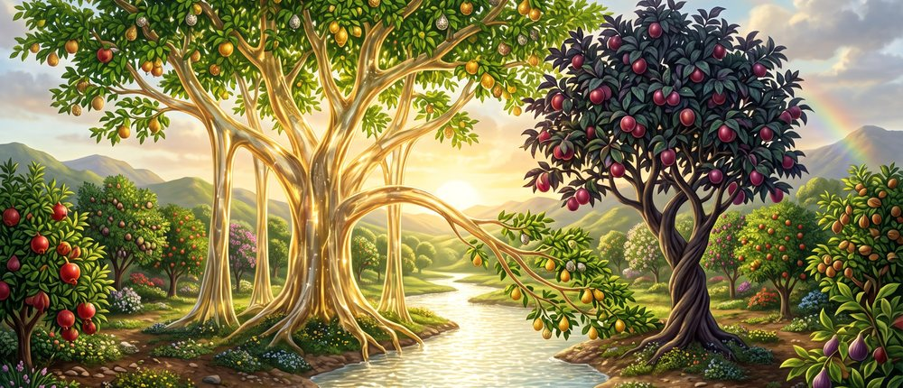
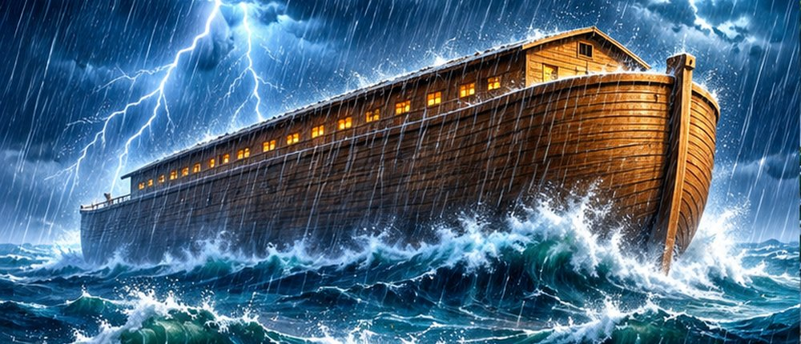
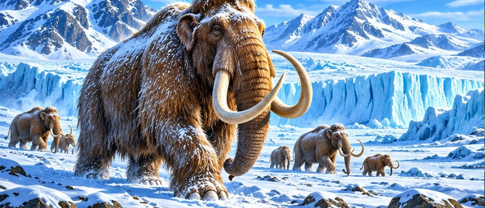

PAGLIKHA
GTKJ
Simula
English
← Bumalik
Pagkawasak
Ang Pagkahulog

Mga Bunga ng Pagkahulog

Ang Arka
Bago at Habang Nagaganap ang Baha

Mga Anyong Lupa at Panahon ng Yelo
Buhay at mga Wika
← Bumalik
 Ang Pagkahulog
Ang Pagkahulog Bago at Habang Nagaganap ang Baha
Bago at Habang Nagaganap ang Baha Buhay at mga Wika
Buhay at mga Wika